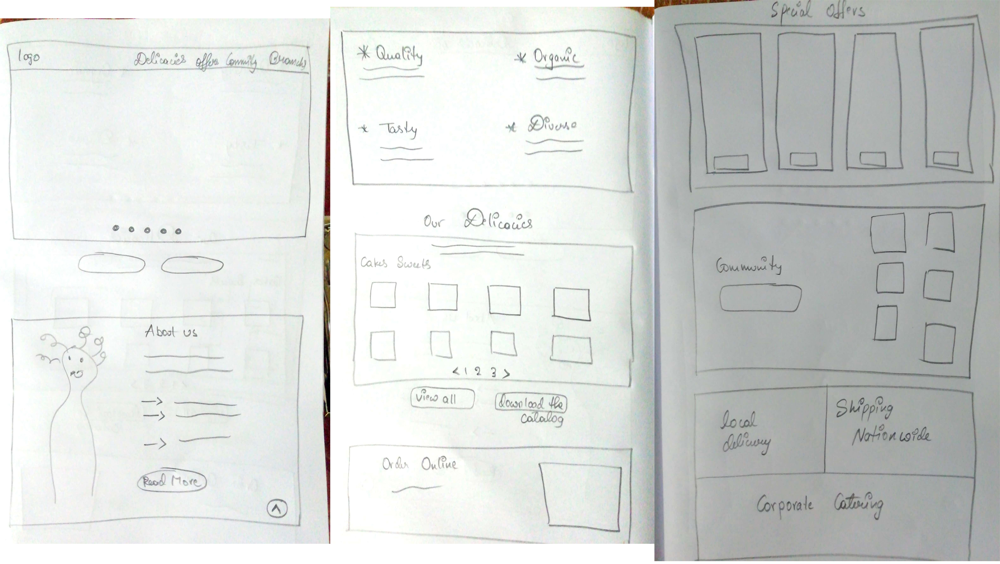

Landing Page For A Bakery
An effective landing page is one which can turn visitors into customers. This case study explains the design flow of a landing page for a bakery with a diversity of services it offers to it's customers.
Overview
It can be a real challenge to create a top-notch landing page. Not only that it needs to be eye-catching, but it also needs to be informative for your audience. A Landing page is often confused and referred to as the page in which a visitor is directed to through links. However, a landing page is a web page itself that serves as the entry point for your main website or a particular section of it. It needs to be specified and functional.
Joey's Bakery is a hypothetical bakery chain in the US. It has 3 branches in New York and is one of the popular bakeries with a lot of trusted clients. The bakery specializes in a lot of desserts, customized cake baking and party catering etc. They want to grow their business even further improve their relationship with clients and customers.
Creating a landing page is one of the best and easiest way to promote a product or service on multiple platforms to get more customers.
The Challenge
Creating a landing page for a bakery which provides diverse services to it's customers.
Defining the key pain points
Landing pages are usually built for specific business purposes like getting more users, subscribers or more product purchases, their effectiveness hugely relies on the information architecture design decisions.
Most important elements of a successful landing page:
- Having only one clear conversion goal.
- Making sure that every element on the page supports this conversion goal.
- There is one CTA (call-to-action) button always visible, so the user can decide any time to use it.
- Provide social validation in the form of testimonials or customer stories.
- Break up long content with subheading, bullets and formatting to make it easier to read.
My Design Approach
- Research
- Sketching
- UI Design
Research Methods
- Client And Customer Interviews
- Competitors Analysis
UX Data Summary
As this is a hypothetical project, I explained my research subjects the idea of this bakery chain and their services and offers and asked them questions accordingly and collected insights.
- Offering the best prices and best plans in the market, taking cake and dessert caterings and offering 24/7 customer support. Highlighting these options and using a strong and modern website design, one can create hands-down best option for it's customers.
- Emphasize that Joey's Bakery always stands upto date with their menu and showcasing their talent on social media to attract new customers.
- Use clear navigation structure, larger UI design elements, a lot of whitespace, and choose distinctive colors.
The task was to create a unique, informaton conveying and totally new vision of the service for the client and consumers. The website had to stand out from the similar ones, be noticeable and remarkable for a user. Inspired with the task, based on user research and market exploration, I decided to solve this task using bright, colorful stock images and curly fonts, searching for the perfect combination of this methods.
Sketching
After analyzing all of the data from the UX research, I created a list of relevant sections and effective copy guidelines for the landing page. This will facilitate writing a new content structure and designing lo-fi wireframes. Landing page has no specific screen count, we can include all the services provided by the restaurant. Based on the hypothetical restaurant's services and presents web design trends, the landing page for Joey's Bakery will have 10 sections namely
- Hero Section
- About Us
- Our Delicacies
- Special Offers
- Our Community
- Other Options
- Our Branches
- Follow Us On Instrgram

UI Design
Designing UI is always the most challenging and interesting part for me. The selection of color is always one of the most interesting parts of the design process. Keeping the vivid and attractive mood in mind, I started to search for the color combination as with their help the design becomes lively. It’s not easy to emphasize the certain steps of color selection as it’s a creative process with constant research. I chose Pink as the primary color,it represents caring, compassion, love and cream.I used Adobe Photoshop and Adobe Illustrator.

Like it or not but we are driven by emotions. Emotions will connect you with your audience more effectively. Understanding their motives will help you discover what and how they want certain problems to be solved. Choosing pink as the primary color was the best option for the design and to tend to increase the visitors emotional quotient. I chose bright stock images to increase the contrast of the page. Bright images will increase the positive mood and will be more attractive for the customer. The bakery has so many services and dishes so the page has so many sections
About the placement of the CTA buttons, I used them to provide a frame for the structure of the landing page. The most important CTA part is placed below the hero section, so the user can immediately act on it.
The header has the buttons for the main blocks of the page. The All Blocks button displays both main blocks and sub-blocks of the page. The Hero Section of the page displays the bakery logo along with header and auto side scrolling 3 images displying the bakery's top 3 services, the idea was to create a bright and engaging start for the user. Having a lot of white space helps a lot, White space is more than just plain emptiness. Think of it as a “less is more” rule that helps to avoid distractions.
The visula hierarchy has influence on where visitors look first. The more the visitor scrolls down the page, more the he/she familiarises with the bakery and can turn into a user. Displaying the bakery's statistics, brand collaborations and testimonials is one of the trust worthy ways to promote our brand.
The main goal of the landing page is to have a CTA (call-to-action) button on every screen so that user can decide to checkin whenever he wants.

Conclusion and Takeaways
This challenge was an excellent opportunity to think more deeply about landing pages and experiment with different decisions that go into such details as the placement of the CTA buttons.
At this point, the landing page is far from complete, since, in case of a real project, this would be the starting point to develop and launch the page to measure the reactions and interactions of the users. Then use the numbers to further improve and optimize the design. There always exist the basic topics you one can enhance such as typography, composition, color or when it comes to the other side — self-development and work process improvement.